제1장서론
1.1. 연구 배경
최근 한국 방위산업은 전 세계적으로 '게임체인저'로 급부상하며 역사상 전례 없는성장세를 기록하고 있다. 2022 년 방산 수출액은 170 억 달러를 돌파하며 역대최고치를 기록했고, 2025 년까지 230 억 달러 이상을 목표로 세계 4 위 무기 수출국진입을 목표하고 있다. 이러한 성장은 단순한 수출 규모의 확대를 넘어, 한국이전통적인 무기 수입국(Follower)에서 글로벌 시장의 핵심 주체(Leader)로 질적 위상을변화시켰음을 의미한다. 특히 러시아-우크라이나 전쟁 이후 한국은 방산 수주액에서세계 2 위를 차지했으며, 2024 년 1 분기 기준 K-방산의 수주잔고는 75 조 원을넘어섰다.
그러나 이러한 성공을 평가할 때, 방위산업의 특성상 대규모 계약 체결을 통한 '수주액'과 실제 해외로 인도되어 매출로 인식되는 '수출액' 간의 수치적 차이를 명확히인지할 필요가 있다. 본 보고서는 이러한 수치적 불일치를 인지하고, K-방산의 성장이주로 대규모 계약 체결을 통한 '수주 잔고' 증가에 기반하며, 이는 장기 계약 이행 및생산 기간이 수반되므로 실제 매출 인식까지 시간이 소요될 수 있음을 강조한다.
이러한 맥락에서, 후발주자로서 기술 추격과 시장 개척이라는 질적 변화를 동반한 한국방위산업의 성과를 분석하는 것은 경영 혁신 사례 연구로서 필수적이다.
LIG Nex1 의 성장 및 위상이러한 K-방산의 급성장 속에서 LIG 넥스원은 대한민국을 대표하는 종합방산산업체로서 핵심적인 역할을 수행하고 있다. 특히 정밀유도무기(Precision Guided Munition, PGM) 사업은 LIG 넥스원 성장의 핵심 동력이다. 2024 년 기준 PGM 사업은 LIG 넥스원 전체 매출의 39.2%를 차지할 정도로 중요한 비중을 차지하며, 이 분야에대한 과감한 연구개발 투자가 성장을 견인하고 있다. LIG 넥스원은 유도무기 개발 및생산에서 독보적인 위치를 확보하고 있으며, 2022 년 이후 아랍에미리트(UAE)와의 약 4 조 원 규모 천궁-II 수출 계약 체결을 시작으로 중동 3 개국에 대한 총액 약 12 조 원의대규모 수출 성공은 LIG 넥스원의 성장 변곡점을 형성했다. 이는 LIG 넥스원의 첨단 PGM 기술력을 국제적으로 입증하는 결정적인 계기가 되었으며, 2024 년 기준 20 조 1,419 억 원에 달하는 사상 최대 규모의 수주 잔고를 기록하며 연간 매출의 6 배에달하는 장기적인 안정적 성장 기반을 확보했다.
LIG 넥스원의 폭발적인 재무 성과는 PGM 분야에서의 기술적, 비용적 우위를 바탕으로하며, 이는 국방과학연구소(ADD) 및 방위사업청(DAPA) 중심의 국가혁신체제(NIS)가제공한 안정적인 내수 시장(기술 축적)과 해외 수출 지원(제도적 보조)의 유기적 결합없이는 불가능했음을 시사한다. 따라서 LIG 넥스원의 PGM 성공은 단순한 기업 경영사례를 넘어, 한국의 독특한 국가 주도형 혁신 시스템(Statist Triple Helix)이 첨단방위산업 분야에서 어떻게 글로벌 경쟁력을 창출할 수 있었는지에 대한 심층적인 분석모델을 제공한다.
연구 필요성 LIG 넥스원의 사례는 후발주자(latecomer) 방산 기업이 기술 종속을 극복하고 글로벌시장에서 경쟁 우위를 확보하기 위한 전략을 제시한다. 특히, LIG 넥스원의 성공은 첨단유도무기 분야에서 한국의 독자적인 국가 주도형 혁신 시스템(NIS)과 수요견인 혁신이어떻게 작동하며, 기업의 R&D 역량 및 사업 역량과 유기적으로 결합했는지를 규명할필요가 있다. 이 분석은 향후 한국 방위산업이 소프트웨어 중심 무기체계(SDWS) 및 전영역 다영역 모자이크전으로 전환되는 미래 패러다임에 대응하기 위한 핵심 시사점을도출하는 데 필수적이다.
1.2. 연구 질문
<표 1. Research Question 요약표>
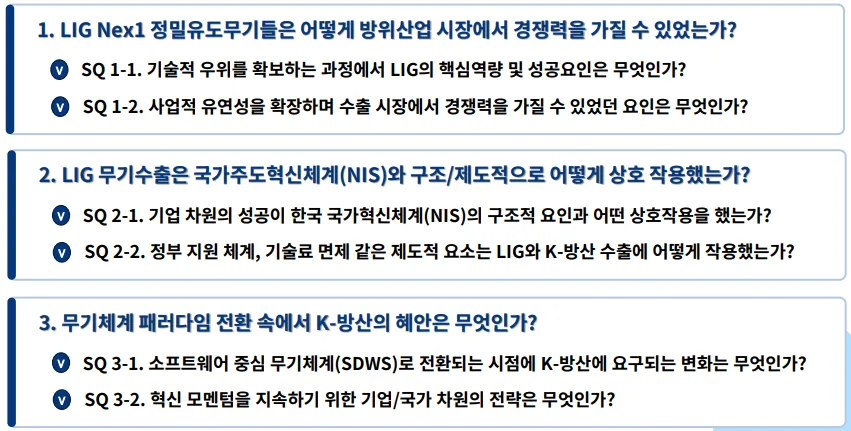
연구 질문에서 '후발주자'라는 표현이 반복적으로 사용되는 것은 LIG 넥스원의 성공을후발주자 이론의 관점에서 분석해야 함을 의미한다. 이는 후발주자가 선발주자가 이미시장을 선점하고 기술 표준을 확립한 상황에서 진입해야 하는 불리함을 극복하고, 오히려 선발주자의 시행착오 를 피하며 '도약('하는 전략적 선택을 심층적으로 탐구해야함을 의미한다.
1.3. 연구 범위 및 기여점
연구 범위 및 분석 중점본 연구는 LIG 넥스원의 주요 사업 영역 중 정밀유도무기(PGM) 개발 및 수출 성공요인에 초점을 맞춘다. 분석은 아래의 세 가지 축을 중심으로 이루어진다.
1. 기업 (LIG Nex1): R&D 역량(기술 내재화, 시스템 통합), 사업 역량(현지화,
파트너십, 납기 대응력)을 분석하여 PGM 기술 우위와 국내외 고객 확장 성공
요인을 규명한다.
2. 지원 조직: 국방과학연구소(ADD), 방위사업청, KIDA 한국국방연구원 등 핵심 지원
조직의 역할을 분석하며, 핵심기술 선도개발 및 기술 국산화 기여 방안을 중점으로
다룬다.
3. 제도적 환경: 수출 인센티브 제도(기술료 면제, 세액 공제) 및 범정부적 통합
거버넌스 구축 사례를 분석하여, 경쟁국 차별화 수출 모델과 범정부적 신뢰 구축에
기여한 점을 논한다.
연구 기여점본 연구는 한국 방위산업의 독특한 혁신 구조를 국가혁신체제(NIS), Triple Helix 모델, 및 후발주자 전략의 관점에서 통합적으로 해석하고, 특히 한국의 'Statist Triple Helix'
모델이 후발주자 방산 기업의 글로벌 경쟁력 확보에 기여하는 메커니즘을 규명하는 데이론적 기여를 한다. 또한, 미래 무기체계 패러다임 전환에 대비하여 K-방산이 지속적인혁신 모멘텀을 확보하기 위한 기업-국가 차원의 전략 로드맵을 제시하여 정책 결정자및 기업 실무자에게 실질적인 통찰력을 제공한다.
제 2 장 이론적 배경
2.1. 기술적 특성
방위산업은 국가 안보의 핵심 축이자 첨단 기술 개발을 선도하는 산업이다. 그 특성상무기체계는 임무 성공과 운용자 생존에 직결되므로 최고 수준의 신뢰성과 성능을요구하며, 이는 일반 민간 산업의 제품 개발 경로와는 다른 궤적을 따르게 한다.
무기체계 개발은 장기적인 주기를 가지며, 높은 요구조건을 충족하기 위한 긴 시험평가과정을 수반한다. 방위산업은 유도조종, 탐색기, 체계 통합 등 다양한 기술 분야의 통합및 융합을 요구하는 대표적인 기술 융복합 산업이다. 특히, 국방부가 국가 안보 유지 및미래 전장 선도를 위해 지정한 '국방전략기술 10 대 분야'와 과학기술정보통신부가 미래국가 경쟁력 확보를 위해 지정한 '국가전략기술 12 대 분야'는 밀접하게 연관되어 있다.
인공지능, 반도체, 우주항공, 사이버 보안 등은 양측 모두에 포함되며, 이는 민간 기술이국방 분야로 '스핀인(Spin-in)'되고 국방 기술이 민간으로 '스핀오프(Spin-off)'될 수 있는이중 용도(Dual-Use) 기술의 중요성을 강조한다. 이러한 기술의 상호 이전 가능성은후발주자 국가가 제한된 자원으로 국방 기술과 민간 기술의 시너지를 극대화하여효율적인 혁신을 추구할 수 있는 경로를 제공한다.
<그림 1. 국가전략기술과 방위산업의 관계 >
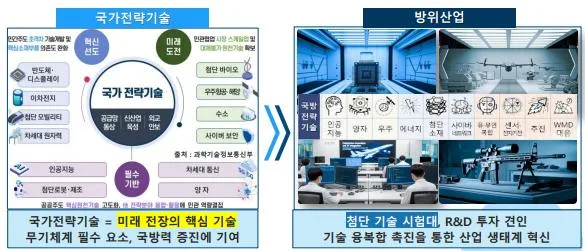
2.2. 기관별 관계
한국 방위산업의 구조는 소수의 대기업이 체계종합(System Integration)을 담당하고다수의 중소 협력업체가 부품 공급 및 특정 기술 분야를 담당하는 특징을 가진다.
이러한 구조는 대기업과 중소기업 간의 긴밀한 협력 네트워크가 혁신 성과에 중요한영향을 미칠 수 있음을 보여준다.
한국의 방위산업은 기업(기술개발 전략 수립), 군(소요기획 및 피드백), 정부(제도 및정책 수립) 간의 '삼자 협력'을 통해 국가 전략기술 확보를 위한 핵심적인 요체로진화하고 있다. 이러한 전략적 협력 체계는 전통적인 군산복합체(Military-Industrial Complex, MIC)의 부정적 함의를 넘어, 국가 안보와 산업 혁신이라는 공동의 목표를달성하기 위한 구조적인 전환을 의미한다. 이 구조는 후발주자 방산 기업이 기술격차를 빠르게 줄이고, 대규모 국책 사업을 통해 기술력을 축적하며, 안정적인 내수시장을 바탕으로 해외 시장으로 진출하는 데 필수적인 기반을 제공한다.
<그림 2. 방위산업 내 참여 기관별 관계 >
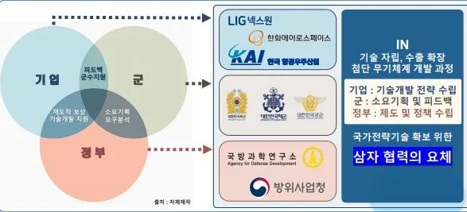
2.3. 혁신 이론의 적용
LIG 넥스원의 PGM 성공 사례는 단일 혁신 이론으로 설명될 수 없으며, 거시적인 국가혁신 시스템 이론과 미시적인 기업 혁신 전략 이론의 다층적 적용을 통해 이해될 수있다.
국가혁신체제(NIS) 및 Triple Helix 모델의 통합 분석한국의 방산 국가혁신체제(NIS)는 정부(ADD, DAPA) 중심의 독특한 구조를 가진다.
ADD 는 고위험·핵심 기술 개발을 주도하고 기술 인큐베이터 기능을 수행하며, 방위사업청(DAPA)은 무기체계 획득 전 주기 관리 및 수출 지원을 담당한다. 이러한정부 주도형 NIS 는 LIG 와 같은 방산 기업에 안정적인 개발 환경과 글로벌 시장 진출기회를 제공하는 중요한 조력자 역할을 수행한다.
또한 표준 Triple Helix 모델(대학-산업-정부)에서 지식 생산을 담당하는 '대학'의 역할이한국 방산 분야에서는 ADD(국방과학연구소)와 군의 ROC 검증 및 피드백 기능으로대체되는 특징을 보인다. 이러한 구조는 아래의 차원에서 'Statist Triple Helix'의극단적인 형태로 분석된다.
- 지식 공간 독점: ADD 는 원천기술 개발 및 기술 소유권을 독점하고, 기업은
ADD 로부터 기술 이전(실시권)을 받아 대량 생산 및 수출에 집중하는 구조다. 이는
기술 개발의 불확실성을 정부가 흡수, 기업은 이전받은 기술을 바탕으로 체계 통합
역량 강화에 집중하게 하여, 후발주자의 초기 R&D 위험을 최소화하는 제도적
보완성을 제공한다.
- 혁신 동기: 한국 방산 NIS 는 '국가 생존'이라는 혁신 동기를 바탕으로 하며, 이는
Nelson 이 제시한 경로 의존성(Path Dependency)의 관점에서 한국 방산의 고유한
발전 경로를 설명한다. 이 구조는 후발주자에게 독보적인 '제도적 가격 우위'를
제공하여, 경쟁사 대비 낮은 비용으로 고성능 제품을 공급하는 기반이 된다. 이
이론의 적용의 구체적인 단계 및 과정은 추후 결론 부분에서 세부적으로 다루고자
한다.
수요견인 혁신(Demand-Pull Innovation)과 RO 의 역할방위산업 혁신에서 수요견인 혁신 모델은 핵심적인 역할을 한다. 군의 명확한작전요구성능(Requirement Operational Capability, ROC)이 기술 개발 방향을 결정하는핵심 동력이며, ADD 와 DAPA 는 수요 파악 및 연구개발 중개자 역할을 수행한다.
- R&D 불확실성 감소 및 실용성 극대화: ROC 는 무기체계의 성능, 운용 조건 등을
구체적으로 명시함으로써, LIG 넥스원이 불확실성이 높은 국방 R&D 에서 명확한
목표를 가지고 기술 개발에 집중할 수 있도록 유도한다. 이는 불필요한 기술
개발이나 비효율적인 R&D 투자를 방지하는 실용적인 통제 기제로 작용한다.
- 엄격한 시험평가와 신뢰성 확보: 개발 이후 ROC 만족 여부를 입증하는 엄격한
시험평가
과정(예: 천궁-II 의 67 개 항목 검증, 현궁 개발 시 영하 30 도 폭설 속 실사격
시험)은 실전 적합성을 보장한다. 이러한 '작전 운용성(Practical Usability)을
최우선'으로 하는 연구 문화는 해외 수출 시 고객에게 '한국군 실전 배치 무기'라는
검증된 신뢰성을 제공하는 강력한 마케팅 포인트로 작용하며, 구매국의 자체
시험평가 비용과 시간을 대폭 절감시켜 납기 경쟁력 향상에 기여하는 핵심
메커니즘을 형성한다.
후발주자 전략 및 혁신 유형론의 적용 LIG 넥스원은 선발주자(미국, 유럽)가 이미 시장을 선점한 상황에서 진입하는후발주자로서, 후발주자 이점(Latecomer Advantage)을 활용하여 성공을 달성했다.
러시아의 불곰사업을 통해 PGM 체계를 도입하고, 이를 해체 분석 및 기술진과의 정보교류를 통해 핵심 기술을 내재화하는 과정을 거쳤다. 이는 선발주자의 시행착오를피하고 최신 기술을 빠르게 도입하여 '도약(Leapfrogging)'하는 전략적 선택이었다.
국산화율 85% 달성 및 ADD 의 기술료 면제 제도 활용은 외산 부품 로열티를 제거하여현궁 개발 시 재블린 대비 30% 가격 우위, 천궁-II 수출 시 유럽 경쟁사 대비 20% 가격우위를 확보하는 비용 우위 전략을 가능하게 했다.
폐쇄적 혁신에서 개방형 혁신으로의 전환과거 높은 보안과 정부 주도하에 폐쇄적 성향을 띠던 방위산업 혁신은 LIG 넥스원의성공을 통해 점차 개방형 혁신(Open Innovation)으로 전환되고 있다.
- 민군기술협력 및 스핀인: 민간의 첨단 기술(AI, 드론)을 국방 분야에 적용하는
'스핀인(Spin-in)' 사례가 증가하고 있다.
- 전략적 파트너십: Ghost Robotics(미국) 인수, Electroninks 와의 협력, 국제 공동
R&D 등은 LIG 넥스원이 자체적으로 확보하기 어려운 첨단 기술을 외부에서
도입하고, 글로벌 공급망에 편입되는 전략적 전환을 의미한다.
이러한 개방형 혁신은 K-방산이 미래 소프트웨어 중심 무기체계(SDWS) 패러다임에대응하기 위한 필수적인 전략이며, ADD 독점 구조로 인한 폐쇄적 NIS 의 구조적한계(AI/SW 기초 연구 역량 부족)를 기업 및 정부 차원에서 보완하려는 노력을반영한다. 후발주자는 외부 기술과 아이디어를 적극적으로 수용하여 혁신 속도를높이고, 글로벌 시장 진출을 위한 협력 기반을 마련함으로써 선발주자와의 기술 격차를빠르게 줄일 수 있다.
제 3 장 사례 분석
3.1. 기업 개요
LIG 넥스원은 1976 년 금성정밀공업㈜으로 설립된 이래 대한민국 자주국방의 기치아래 성장해 온 대한민국을 대표하는 종합 방위산업체이다. 정밀유도무기(PGM), 감시정찰(ISR), 지휘통제·통신(C4I), 항공전자·전자전(AEW)에 이르는 다양한 첨단무기체계를 개발 및 양산해 왔으며, 방위사업청(DAPA), 국방과학연구소(ADD), 국방기술품질원 등 국가 방산 기관과의 긴밀한 공조를 기반으로 운영되고 있다.
기업의 기술 중심 구조는 인력 구성에서도 명확하게 드러난다. LIG 넥스원은 약 6,200 명의 임직원 중 R&D 인력 비중이 약 50%에 달하며, 2024 년 3 분기 기준으로 이비중은 59.1%(3,217 명)로 국내외 주요 방산기업 대비 압도적인 집중도를 보여준다.
특히 R&D 인력 중 석·박사 학위 소지자 비율이 58%에 이르러, 기술 개발의 양적성장뿐만 아니라 질적 역량 확보에 주력하고 있음을 시사한다. 본사는 경기도 용인에위치하며, 판교 R&D 센터, 용인연구소, 대전 연구소/공장, 구미 1/2 공장, 김천 1/2 공장, 진해 공장 등 전국에 걸쳐 연구 및 생산 인프라가 분산 배치되어 있어, 대규모 사업수행 및 안정적인 생산 공급망 운영의 물리적 기반을 형성하고 있다. 글로벌 시장확대를 위해 미국(버지니아), 콜롬비아(보고타), 인도네시아(자카르타), 사우디아라비아(리야드), 아랍에미리트(아부다비) 등 해외 사업장 및 사무소를 운영하며글로벌 네트워크를 강화하고 있다.
<그림 3. LIG 기업 개요 >
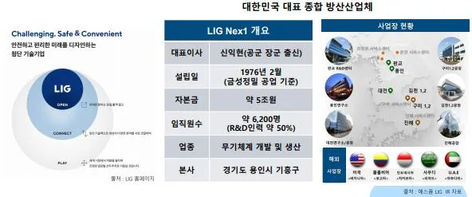
3.1.1. PGM 무기체계 혁신 역사
LIG 넥스원의 혁신 역사는 PGM 체계 개발을 중심으로 대한민국 자주국방 능력 확보 및글로벌 시장 진출로 이어지는 과정이었다. 1976 년 금성정관공업 설립을 통해방위산업에 첫발을 내디딘 후, 1977 년 HAWK NIKE 창정비 업무와 구미하우스 생산인프라 구축을 통해 제조업 기반을 다졌다.
1990 년대는 유도무기 역량 축적의 시기였다. K-SAM 개발을 통해 단거리 방공 능력을확보했으며, 1997 년 네스원퓨처 출범과 함께 휴대용 지대공 유도무기인 ‘신궁’을개발하며 최첨단 유도무기 기술 개발의 태동을 알렸다. 2000 년대에는 천궁(M-SAM)
도입을 통해 장거리 방공 시스템 개발 역량을 확보하며 방공망의 중추를 담당하게되었다. 특히 2004 년에는 유도무기 '해성'을 중남미에 수출하며 대한민국 최초로유도무기 글로벌 시장에 진출하는 이정표를 세웠다.
2010 년대 이후는 글로벌화와 폭발적인 성장 변곡점을 형성한 시기이다. 2012 년 '천궁'이 중동 지역에 수출되며 글로벌 방산기업으로 도약하는 발판을 마련했고, 2015 년 기업공개(IPO) 및 상장을 통해 기업 투명성과 신뢰도를 제고했다. 가장결정적인 혁신 변곡점은 2022 년 이후 형성되었다. 아랍에미리트(UAE)와의 약 4 조 원규모 천궁-II 수출 계약 체결을 시작으로 중동 3 개국에 대한 총액 약 12 조 원 규모의대규모 수출에 성공하며, LIG 넥스원의 첨단 PGM 기술력을 국제적으로 입증했다.
이러한 성과에 힘입어 2024 년 기준 20 조 1,419 억 원에 달하는 사상 최대 규모의 수주잔고를 기록하며 연간 매출의 6 배에 달하는 장기적인 성장 기반을 확보하였다.
<그림 4. LIG 혁신 역사 >
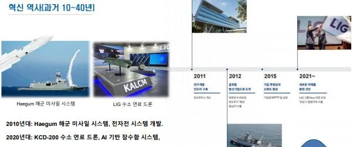
3.1.2. 주요제품
LIG 넥스원은 정밀유도무기(PGM), 지휘통제통신·사이버(C4I), 감시정찰(ISR), 항공전자·전자전 (AEW)의 네 가지 핵심 사업 영역을 중심으로 포트폴리오를 구성하고있다. 이 중 PGM 사업이 기업 매출에서 가장 큰 비중을 차지하며 성장을 견인하고있다. 해당 내용은 아래의 그림표와 같다.
<그림 5. LIG 주요제품 및 매출비중(24 년 기준) >
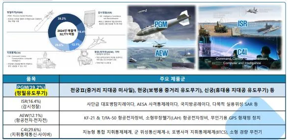
분석에 따르면, LIG 넥스원의 전체 매출에서 PGM 이 39.2%로 단일 품목 중 가장 높은비중을 차지하고 있으며, 이는 LIG 가 고부가가치 및 기술 집약도가 높은 정밀 타격분야에 자원과 기술을 집중하는 선택과 집중 전략(Focus Strategy)을 명확히구사했음을 보여준다. 이러한 전략적 집중은 후발주자로서 제한된 국가 자원을효율적으로 사용하여 글로벌 시장에서 기술적 우위를 확보하는 데 결정적인 역할을하였다.
3.1.2.1. 정밀유도무기(PGM)
LIG 의 매출중 가장 큰 비중을 차지하는 정밀유도무기(PGM, Precision-Guided
Munition)는 첨단 유도 및 제어 시스템을 통합하여 육·해·공 표적을 정확하게 타격하는무기체계를 의미한다. PGM 의 궁극적인 목적은 군사 작전의 효율성을 극대화하는동시에, 목표물에 대한 정확한 타격(Precision Strike)을 통해 비전투원 및 민간 시설에대한 부수적 피해(Collateral Damage)를 최소화하여 윤리적·정치적 리스크를 관리하는데 있다.
PGM 의 등장은 기술의 발전, 인권 신장 요구, 그리고 전쟁의 원칙(집중과 절약)에 의해단계적으로 발전해 왔다. 그 발전 개요는 다음과 같다.
- 베트남 전쟁 (1955~1975): 레이저 유도폭탄이 실전에서 처음 사용되었으며,
표적을 정밀하게 타격하는 개념의 시발점이 되었다.
- 걸프 전쟁 (1990~1991): 이 전쟁에서 사용된 전체 탄약 중 약 5%만이 정밀
유도무기였지만, GPS(Global Positioning System) 및 INS(Inertial Navigation System) 등 첨단 기술이 본격적으로 도입되면서 정밀 유도 개념이 확립되었고,
무장의 정확성이 획기적으로 향상되었다.
- 이라크 전쟁 (2003~2011): PGM 의 사용 비중이 전체 탄약의 68%에 달하며 이
전쟁은 '정밀 유도무기 전쟁'으로 불리게 되었다. GPS, 레이저 유도, 적외선 센서 등
다양한 유도 시스템이 결합된 PGM 은 현대 전쟁의 주무기로 확고히
자리매김하였다.
3.1.2.2.정밀유도무기 in 현대전쟁현대전에서 정밀유도무기는 단순한 공격 수단을 넘어, 국가 안보 및 군사 작전의성공을 좌우하는 전략적 핵심 자산으로 기능한다. PGM 기술은 인공지능(AI), 무인화, 사이버전 등 4 차 산업혁명 기술과 결합하여 미래 전쟁 패러다임 전환의 기반을구축하고 있다.
가장 중요한 역할은 다층 방어체계(Multi-layered Defense System) 구축에필수적이라는 점이다. 현대의 위협은 고고도 탄도미사일, 저고도 순항미사일, 그리고무인기(드론) 등 다층적이고 복합적이다. 이에 대응하기 위해 국가들은 다양한 높이와속도를 커버하는 방어 무기체계를 통합 운용하는 다층 방어망을 구축한다.
LIG 넥스원의 PGM 은 이 다층 방어체계에서 중심축 역할을 수행한다. LIG 는 중거리지대공 미사일인 천궁-II(M-SAM-II)를 통해 하층 방어 및 중거리 요격 임무를 수행할뿐만 아니라, 장거리지대공유도무기(L-SAM) 개발 성공을 통해 대기권 내·외에서고속으로 비행하는 적 미사일을 직격요격(HTK)하는 상층 방어 역량을 확보했다. 이처럼 LIG 의 PGM 은 한국형 미사일 방어 체계(KAMD)의 핵심 요소들을 제공하며 적의미사일 및 항공기 위협에 대응하는 다층 방어망을 구축하는 데 필수적인 역할을수행한다. 이러한 고정밀 방어 능력은 단순한 방어적 수단을 넘어 잠재적 적국에 대한전략적 억지력(Strategic Deterrence)을 강화하는 핵심 자산으로 평가된다. 해외 수출시장에서도 LIG PGM 은 단순한 무기가 아닌, 검증된 국가 안보 솔루션으로포지셔닝하는 기반이 된다.
<그림 6. PGM 의 중요성 및 다층방어체계 개념 >
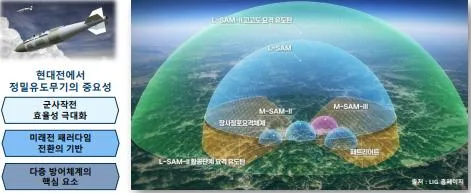
3.1.2.3.핵심 기술 LIG 넥스원이 PGM 분야에서 성공할 수 있었던 동력은 첨단 기술의 내재화 및 시스템통합 역량에 기반한다. 정밀 유도무기의 핵심 기술은 크게 네 가지 분류로 나누어
설명할 수 있다.
1. 탐색기 기술 (Advanced Missile Seeker): PGM 의 '눈'과 '두뇌' 역할을 하는기술로, RF(Radio Frequency), IR(Infrared), IIR(Imaging Infrared) 등 다양한 유형의탐색기가 적용된다. 특히 LIG 는 RF 및 IR 탐색기 모두에 대한 기술적 유연성을
확보하고 있으며, 이는 해외 고객의 다양한 환경 및 위협 유형에 맞춘 맞춤형
포트폴리오를 제공하는 전략적 우위를 제공한다.
2. 유도조종 기술 (Guidance Control System): 미사일의 비행 경로를 정밀하게
제어하는 기술이다. 비례항법(PN) 기반의 고등 유도 법칙, 관성항법장치(INS),
그리고 지령 유도 기술이 통합된다. LIG 는 고도의 표적 추적 알고리즘을 구현하여
천궁-II 및 L-SAM 등에 적용하고 있으며, AI 기반 유도 알고리즘 개발 가능성도
모색하고 있다.
3. 공력 설계 (Aerodynamic Design): 미사일의 고기동성 및 종말 기동 성능을
극대화하는 설계 기술이다. 카나드(Canard) 설계와 측추력기(DACS, Divert and
Attitude Control System) 적용을 통해 요격 미사일이 회피하는 표적을 추격하고
직격요격(Hit-to-Kill, HTK)을 달성하는 능력을 확보한다.
4. 추진 및 발사 (Propulsion & Launch): 수직발사체계(VLS), 콜드 론칭 기술(신궁, 현궁), 그리고 다단 펄스 추진기관(L-SAM) 등을 포함하며, 발사 플랫폼의 안전성과
전방위 대응력을 향상시키는 기술이다.
PGM 의 성능을 판단하는 핵심 기술 지표는 유도 정밀도(CEP, Circular Error Probable), 유도 제원(사거리, 속도, 대응시간), 요격 성공률/효과 달성(관통력, 파괴력)의 세 가지로분류된다.
LIG 넥스원은 독자적인 개발 및 러시아와의 기술 이전(불곰사업)을 통해 내재화한기술력을 바탕으로 선발주자 대비 특정 영역에서 기술적 우위를 점하며후발주자로서의 도약에 성공했다. 중거리 지대공 미사일인 천궁-II 는 사거리측면에서는 미국 Patriot PAC-3 MSE 대비 짧지만, 직격요격(HTK) 능력을 보유하고 마하 4.5~5 의 고속 기동성 및 빠른 대응 시간을 자랑하며 중거리 방공망으로서 세계 최고수준의 성능을 입증하고 있다.
특히, LIG 가 개발한 단거리 탄도탄인 현무-4 의 경우 마하 10 의 속도와 5m 이하의뛰어난 CEP 정밀도를 자랑한다. 현무-4 의 압도적인 파괴력은 관통력 측면에서콘크리트 100m 이상을 관통할 수 있어, 미국 GBU-28 의 4 배에 달하는 성능을보여준다. 이는 유사한 급인 러시아 Iskander-M (관통력 3~6m)이나 미국 ATACMS (CEP 10m) 대비 정밀도와 파괴력 측면에서 확실한 기술적 우위를 점유하고 있음을시사한다.
이러한 비교는 LIG 의 핵심 기술력이 단순히 선진 기술을 모방하는 것을 넘어, 특정영역에서 독자적인 성능 개선을 통해 글로벌 경쟁 우위를 확보하는 핵심 원천임을명확히 보여준다.
해당 내용을 기반으로 경쟁사와 LIG 정밀유도무기의 핵심기술지표 기반 성능의비교우위는 아래의 표와 같다.
<표 2. 경쟁사 대비 LIG 정밀 유도무기 핵심기술 비교표 >
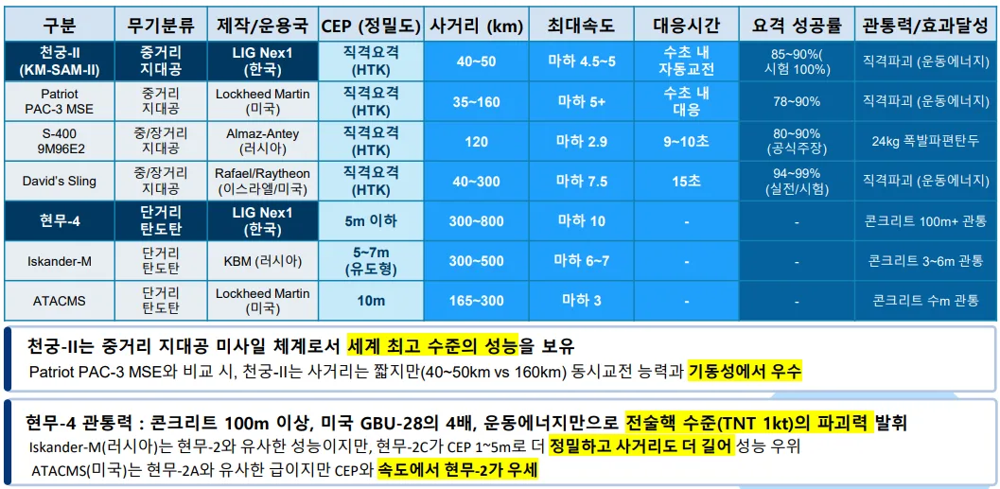
3.2. 성공요인
3.2.1. 분석 범위 및 중점
LIG 넥스원의 PGM 수출 성공은 한국 방위산업의 독특한 혁신 구조인 Statist Triple Helix 모델에서 제시하는 세 가지 축, 즉 기업(Enterprise), 지원 조직(Support Organizations), 그리고 제도적 환경(Institutional Environment)의 유기적인 상호작용의결과이다. 이 세 축은 상호 보완적으로 작용하며 후발주자 LIG 가 글로벌 경쟁력을확보하는 기반을 제공했다.
- 기업 (LIG Nex1): 혁신의 엔진(R&D 역량)과 시장 진출의 핸들(사업 역량) 역할을
수행한다.1 PGM 기술 내재화와 시스템 통합 능력을 통해 기술적 우위를 확보하고,
고객 맞춤형 협상 능력 및 납기 대응력을 통해 국내외 고객을 확장한다.
- 지원 조직 (ADD, DAPA, KIDA): 기업의 제품에 대한 실전 검증 기반 신뢰성을
확보하고, 복잡한 수출 과정을 지원하는 통합 사업화 지원 체계를 구축하며 기업의
날개(Wing) 역할을 수행한다.
- 제도적 환경 (Governance, Incentives): 수출 인센티브 제도화 및 범정부적 통합
거버넌스 구축을 통해 경쟁국과 차별화되는 한국형 국가 주도 수출 모델을
완성하는 활주로(Runway) 역할을 한다.
<그림 7. 성공 요인 분석범위 및 중점 요약 >
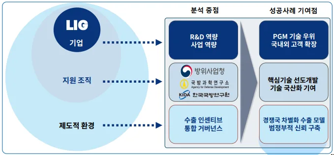
3.2.2. 성공요인 1: 기업
3.2.2.1. R&D 역량
가. Capability (첨단 기술 내재화 능력)
1) ROC 기반의 실용적 연구 문화 정착:
LIG 넥스원은 정부 주도의 전문화/계열화 정책 하에 PGM 분야에 자원을 집중하며
핵심 기술 역량을 선제적으로 구축했다. 군(軍)이 설정한 명확한 작전요구성능(ROC)
은 불필요한 기술 개발이나 비효율적 R&D 투자를 방지하고, PGM 경량화나 이동표
적 추적 알고리즘 개발과 같은 구체적인 난제 해결에 집중하도록 유도하는 효율적
인 통제 메커니즘으로 기능했다. 이러한 연구 문화의 정착을 보여주는 대표적인 사
례가 현궁 개발이다. 2007년부터 10년간 진행된 현궁 개발 과정에서 연구진은 영하
30도의 폭설 속 실사격 시험 등 가혹한 ROC를 충족하기 위해 노력했으며, 이를 통
해 '작전 운용성’을 최우선으로 하는 실용적 R&D 문화를 조직 내에 체화시켰다.
2) 전략적 기술 도입 및 SECI 모델 기반 지식 내재화:
후발주자인 LIG 는 러시아의 불곰사업(1995~2007 년)을 통해 PGM 체계(METIS-M,
Igla 등)를 도입하고, 러시아 기술진과의 정보 교류 및 시스템 해체 분석을 통해
핵심 기술을 빠르게 내재화했다. 이러한 지식 내재화 과정은 Nonaka 의
SECI(Socialization, Externalization, Combination, Internalization) 모델을 통해체계적으로 이루어졌다.
- 공동화(Socialization): 러시아 기술진과의 교류로 첨단 미사일 설계 철학 등
암묵지(Tacit Knowledge)를 흡수했다.
- 표출화(Externalization): 도입 무기 해체 분석을 통해 유도/제어 원리를
도출하고, 핵심 알고리즘(형식지)으로 코드화했다.
- 연결화(Combination): 러시아의 형식지를 국내 전자 시스템 규격 및 부품
표준과 통합하여 차세대 PGM 개발에 필요한 '한국형' 기술 표준을 완성했다.
- 내면화(Internalization): 현궁 개발 시 '파이어 앤 포겟(F&F) 알고리즘'을 형식지
기반으로 반복 적용하고 시험하여 운용 숙련도를 확보했다.
이러한 전략적 지식 내재화의 결과로 신궁의 탐색기 국산화율이 95% 이상으로
높아지는 등 핵심 기술 경쟁력을 확보했다.
3) 체계적인 인재 개발 환경 조성:
LIG 는 단순한 인력 유치를 넘어 연구원의 개인 역량(암묵지)을 조직의 영구적인
자산(형식지)으로 전환하는 제도적 지원을 제공했다. 전문기술팀 운영과 핵심 기술
심화 활동 제도화를 통해 바쁜 개발 일정 중에도 학술 연구 병행이 가능한 환경을
조성했으며, 이는 노하우 손실 위험을 관리하고 기술 연속성을 보장하는 조직적
구조를 구축했다. 실제로 PGM 핵심 분야 전문가들이 세계 3 대 인명사전에
등재되는 등 연구원 개개인의 기술적 공신력과 글로벌 수준의 전문성이
객관적으로 입증되었다.
<그림 8. 무기개발 지식의 내재화 과정 도식 및 사례 >
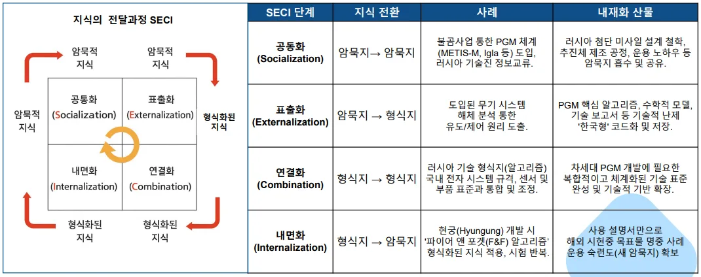
나. Resources (R&D 인프라 및 인력 자원)
1) 국내 최상위 R&D 인력 집중도:
LIG 넥스원은 전체 직원 중 R&D 인력 비율이 60%에 달하며, 이는 국내외 주요 방산
기업(Rafael 44%, Lockheed Martin 30%)과 비교했을 때도 압도적인 수준이다. 총
R&D 인력 2,788명(24년 기준)으로 분야별 업계 최고의 전문 인력을 구성하고 있으
며, 이는 R&D 역량의 질적 기반이 된다.
2) 종합 시험시설 기반 시스템 통합 역량 (국제공인시험기관):
LIG 넥스원은 체계 작업장, EMC 시험장, 전자전/탐색기 챔버 등 PGM 개발 및
시험에 필수적인 특수/전문 시험시설을 구축하고 있다. 특히, 국내 유일하게 신뢰성
전 분야 '국제공인시험기관(KOLAS)' 인증을 보유하고 있다. 이러한 종합적인 시험
인프라는 기술의 한계를 지속적으로 검증하고 실전적 '시스템 통합력'을 강화하는
역할을 한다. 무기 수출 시 이 인증은 고객에게 신뢰도를 보증하며 국제 수출입
인증을 간소화할 수 있는 강력한 전략적 자산이다.
3) CMMI Level 5 달성:
LIG 넥스원은 한국 방산기업 중 유일하게 미 국방부(DoD) R&D 프로세스 역량
평가 국제 표준인 CMMI Level 5 최고 등급을 획득했다. 이는 LIG 가 Lockheed
Martin, Boeing 등 글로벌 Big 5 와 동등한 R&D 프로세스 역량을 갖췄음을
국제적으로 인정받았음을 의미한다. 이 Level 5 인증은 단순한 품질 인증을 넘어,
품질 신뢰성으로 15-20%의 가격 프리미엄을 정당화하고, 미국 시장 진입 시 DoD
계약 최우선 자격을 얻는 등 해외 시장에서 LIG 의 PGM 기술력을 보증하는 전략적
자산이 되었다.
<그림 9. LIG R&D 인력 현황 및 경쟁사 비교 >
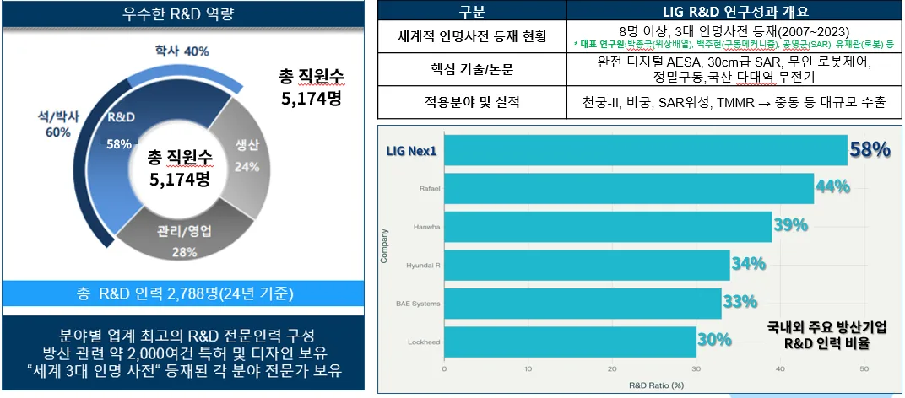
<그림 10. LIG 시험 인프라 현황 >
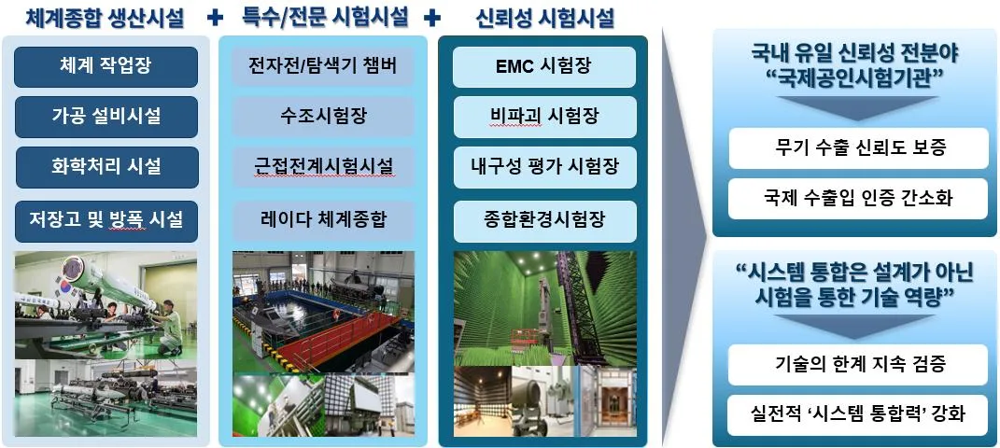
다. R&D 결과 및 결론 LIG 넥스원은 이러한 R&D 역량과 인프라를 바탕으로 국내 방산 기업 중 압도적인 연구성과를 달성했다. 최근 10 년간 경쟁사 대비 2 배 이상의 특허 출원 건수(약 2,515 건)를기록했으며, 이 중 58%가 PGM 관련 IPC 코드에 집중되어 있어 핵심 기술 경쟁력의원천임을 입증했다. 또한 PGM 관련 논문 발표 건수에서도 경쟁사 대비 학문적리더십을 확립했다. 이처럼 LIG 는 고도의 통합 엔지니어링 역량을 인정받아 체계통합자로서의 독자적인 역할을 수행하며, RF 및 IR 탐색기 모두를 보유한 유연성을통해 해외 고객 맞춤형 방공 솔루션 역량을 구축할 수 있었다.
<표 3. LIG R&D 성과 요약 및 경쟁사 비교표 >
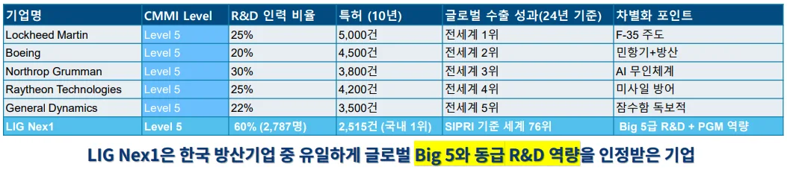
3.2.2.2. 사업 역량
가. Capability (고객맞춤형 협상 능력)
1) 현지화 능력 (Localization Strategy): LIG 는 해외사업연구소를 통해 현지 군부와 직접 소통하며 구매국의 군사 작전 환경, 기후 및 지형 특성, 기존 방공망 호환성 등을 정밀하게 분석하고, 이를 기반으로 제품을고객 맞춤형 으로 재설계하는 능력을 갖추고 있다.
- UAE 천궁-II 사례: UAE 는 이미 미국 패트리어트(PAC-2/3) 방공망을 보유하고
있었으나, LIG 는 UAE 군 지휘체계(C4I)와 천궁-II 의 완벽한 연동을시연함으로써 고객을 감동시켰다. 이는 유럽 경쟁사(MBDA)가 단순 제품판매에 집중할 때, LIG 는 천궁-II 를 "UAE 방공망의 일부"로 포지셔닝하며시스템 통합 능력을 강조하여 2.6 조 계약을 성사시키는 데 결정적인 역할을했다.
- 사우디 천궁-II 사례: 사우디의 사막 고온(50 도 이상) 및 모래폭풍 환경에
대응하기 위해 레이더와 유도탄에 강화된 냉각시스템 및 방진 필터를 신속하게적용했다. 이는 미국 경쟁사 대비 현지화 기간을 5 년에서 1 년으로 대폭단축시켜 고객의 긴급한 소요에 대응할 수 있는 능력을 보여주었다.
2) 파트너십 구축 능력 (Strategic Partnership): LIG 는 단순한 무기 공급자가 아닌 장기적인 전략적 동맹 관계를 형성하는 데 주력했다.
- 기술 이전 및 현지 생산: 미국이나 이스라엘 같은 경쟁사와 달리, LIG 는
구매국의 자체 생산 능력 확보를 지원하는 적극적인 기술 이전(ToT)을제공했다. 루마니아에 대공 미사일 현지 생산을 추진하는 등 현지 생산체계구축을 통해 구매국 내 고용을 창출하고 방산 생태계를 강화하여 장기적인파트너십 기반을 마련했다.
- 포스트세일즈 지원: 계약 후에도 완벽한 군 훈련 교육, 수리 부속품 지원, 현지
유지보수 체계 구축 등 포스트세일즈 패키지를 제공하여 UAE 로부터 "단순공급자가 아닌 전략적 파트너"로 인식되는 신뢰 관계를 구축했다.
나. Resources (납기일 준수 위한 생산 공급망 자원)
1) 선제적 설비 투자 기반의 생산 체계: LIG는 동시다발적인 대규모 수출 물량을 안정적으로 납품하기 위해 구미 1/2 공장(유도무기 조립), 김천 1/2 공장(부품 가공), 대전(레이더/전자전), 진해(해상무기) 등 전국에 걸친 분산 생산체계를 운영한다.
- 납기 준수를 위한 투자: UAE(2.6 조), 사우디(4.2 조), 이라크(3.7 조) 등 약 12 조
원 규모의 계약 물량을 소화하기 위해 2022~2027 년까지 구미 및 김천사업장에 3,000 억 원 이상을 투자하여 생산 라인을 증설했다. 또한, 계약 체결전부터 주요 부품을 선제적으로 생산하여 재고(2024 년 재고자산 59% 증가)로확보하는 전략을 통해 납기 준수율 100%를 달성했다. 이처럼 높은 납기준수율은 고객과의 신뢰를 구축하는 데 결정적인 역할을 하였다.
2) 수직통합 공급망 및 공급망 오케스트레이터 역할: LIG는 1,200여 개 협력업체와 장기 계약을 통해 부품 공급부터 조립, 시험까지 이어지는 수직통합 공급망을 구축하여 품질 일관성과 원가 통제력을 확보하고 있다.
- 원가 경쟁력의 확보: ADD 기술 이전 및 협력업체와의 공동 개발을 통해
국산화율 85%를 달성했으며, 이는 외산 부품 로열티를 제거하여 현궁(재블린대비 30% 우위) 및 천궁-II(유럽 경쟁사 대비 20% 우위)의 뛰어난 가격경쟁력을 확보하는 근간이 되었다.
- 공급망 조정자: LIG 는 주계약자로서 한화 등 협력업체와의 관계에서 공급망
오케스트레이터(Orchestrator) 역할을 수행했다. 2024 년 이라크 계약 시, 한화의 생산 여력 문제로 인한 갈등 발생 시 방위사업청 중재 하에 10 개월간협의를 진행하여 공급망을 안정화하고 계약을 성사시킴으로써, 대규모 계약이행에 필수적인 조정 능력을 입증했다.
○ 결론: R&D 부서와 사업부서가 서로 순환적으로 강화하는 구조 LIG 넥스원의 성공은 R&D 부서와 사업 부서가 상호 순환적으로 강화하는플라이휠(Flywheel) 구조를 통해 가능했다. R&D 부서가 CMMI Level 5 인증, KOLAS 기반 시험 능력, 85% 국산화율 달성을 통해 기술적 우위와 제도적 가격 우위를창출한다. 사업 부서는 이 우위를 바탕으로 고객 맞춤형 협상 능력과 납기 준수 능력을활용하여 대규모 수출 계약(최대 수주)을 달성한다. 이렇게 확보된 대규모 수익은 다시 R&D 인력 및 인프라에 공격적으로 재투자되어(기술 재투자), 다음 계약 시 기술적우위를 더욱 강화하고 협상 주도권을 높이는 선순환 구조를 완성한다. 특히, 대규모수출은 후발주자에게 초기 R&D 투자 비용을 회수하고 규모의 경제(Economies of Scale)를 실현하게 하여, 낮은 단가와 최신 기술력을 제공할 수 있는 독특한 경로의존적 이점을 극대화했다.
<그림 11. R&D / 사업역량의 선순환 구조 >
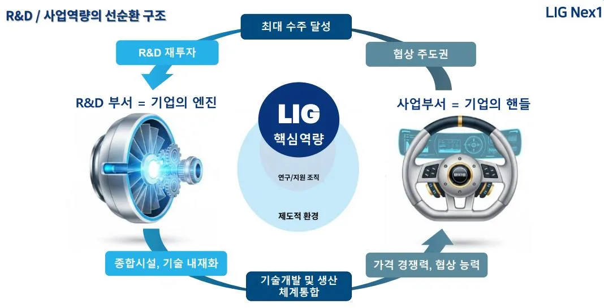
3.2.3. 성공요인 2: 지원조직
<그림 12. 지원조직 개요 >
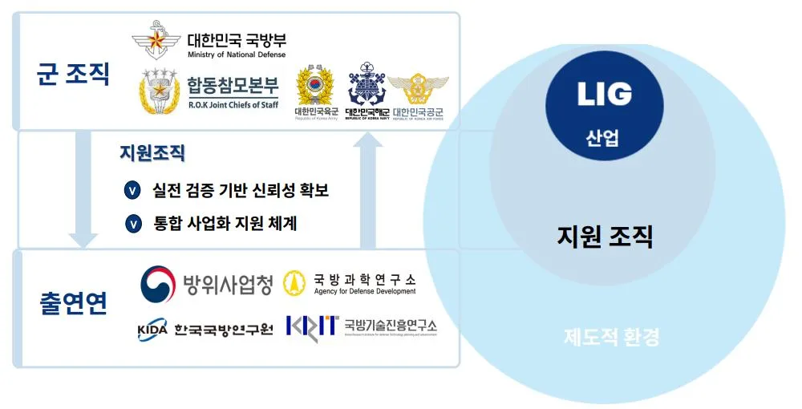
3.2.3.1. 지원조직 역할 1: 실전 검증기반 신뢰성 확보
우선 지원 조직인 한국 군은 무기체계 획득 과정을 통해 세계적으로 엄격하고 실전적인 3 단계 검증 체계를 구축하고 있으며, 이를 통해 확보된 신뢰성은 LIG PGM 의 글로벌판매 시 강력한 세일즈 포인트로 작용한다.
무기체계 획득 3 단계 검증 체계: 1) 1단계: 합참 분석 실험 (군사적 타당성): 합동참모본부(합참) 분석실험실에서 소요
군의 필요성을 검토하고, 군사적 타당성 및 작전 효과 분석을 통해 ROC를 확정한다.
2) 2 단계: ADD/국기연 기술 개발 및 선행 연구 (기술적 타당성): ADD 가 ROC 기반
핵심 기술을 개발하고, 국방기술진흥연구소(KRIT)가 기술 성숙도(TRL)를 평가하여
기술적 완전성 및 양산 가능성을 검증한다.
3) 3 단계: 합참 시험평가 (실전 운용 적합성): 합참 시험평가부에서 극한 환경 내구성,
요격 성공률 등 광범위한 항목을 검증하여 '전투용 적합 판정'을 내리고 전력화를
승인한다.
<그림 13. 한국군 3단계 무기체계 획득과정 및 LIG PGM 수출 영향 >
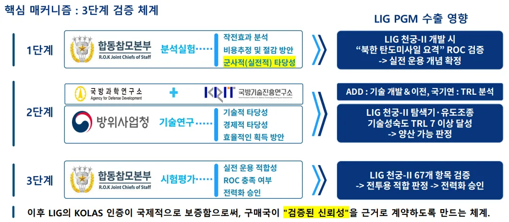
획득과정 실효성 사례 : LIG PGM 수출 영향 (천궁-II UAE 수출 사례): LIG 의 천궁-II 는 '북한 탄도미사일 요격'이라는 ROC 를 충족하기 위해 67 개 항목에대한 혹독한 검증 과정을 거쳐 한국군에 실전 배치되었다. 이러한 국방 당국의 엄격한 3 단계 검증 체계를 통과했다는 사실은 LIG PGM 이 단순한 '제품'이 아닌 '한국군이실전에서 운용하는 무기'라는 확고한 검증된 신뢰성(Verified Reliability)을 해외고객에게 제공한다.
UAE 등 구매국 입장에서 이는 자체적인 시험평가에 필요한 막대한 비용과 시간을 대폭절감시켜주는 요인이 된다. LIG 는 해외 협상 시 이 합참의 시험평가 결과를 근거로제시함으로써, 복잡하고 오랜 시간이 걸리는 국제 수출입 인증 및 현지 검증 과정을간소화하고 계약 체결을 가속화할 수 있었다.
3.2.3.2. 지원조직 역할 2: 통합 사업화 지원 체계
대규모 방산 수출은 기업 단독으로는 해결 불가능한 제도적, 외교적 장벽을 수반한다.
지원 조직은 통합적 사업화 지원 체계를 통해 LIG 가 '기술은 있지만 팔 수 없는 상황'을방지한다.
통합적 사업화 지원 3 단계 메커니즘: 1. 1 단계: KIDA 소요 검증 (정책적 타당성): KIDA 가 천궁-II 와 같은 대형 사업에
대해 정책적 일관성과 소요 적절성을 입증하여 국방중기계획에 반영하고 예산을
편성하는 근거를 마련한다.
2. 2 단계: 방사청/국기연 선행 연구 (수출 전략 기반): 방사청과 국기연이 무기체계의
비용 대비 효과 분석 및 수출 가능성 사전 분석을 수행하여 LIG 의 수출 전략
수립을 위한 전략적 정보를 제공한다.
3. 3 단계: 원팀 체제/G-to-G 외교 지원 (갈등 조정 및 완성): 청와대/방사청이 중심이
되어 기업 간의 갈등을 중재하고, G-to-G(정부 간) 외교 지원을 통해 최종 계약을
완성한다.
<그림 14. 통합적 사업 지원과정 3단계 >
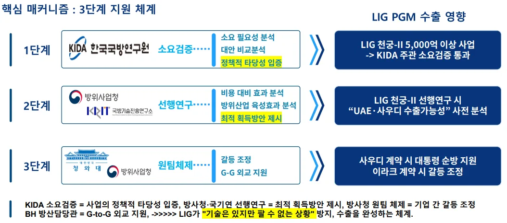
통합적 사업 지원 사례 : LIG PGM 수출 지원 사례 (이라크 천궁-II 계약): 2024 년 9 월 이라크와 3.7 조 원 규모의 천궁-II 계약이 체결된 후, 협력업체인 한화가생산 여력 부족을 이유로 반발하는 공급망 갈등이 발생했다. 이는 LIG 의 납기 준수율과고객 신뢰를 심각하게 훼손하여 계약 자체가 무산될 위험이 있었다. 이때 방위사업청은원팀 체제를 가동하여 10 개월간 중재 협의를 진행했고, LIG 가 일부 비용을 분담하고한화의 설비 투자를 유도함으로써 공급망을 안정화시켰다. 이러한 국가 차원의 통합적
개입이 없었다면 LIG 는 핵심 공급망 문제를 해결하지 못하고 '기술은 있지만 팔 수없는' 상황에 직면했을 가능성이 높았다.
<그림 15. 지원조직간 상호 보완 구조 >
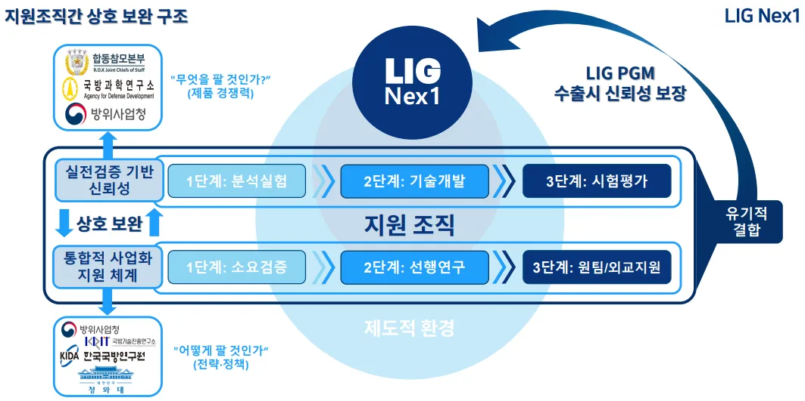
지원 조직은 위 그림 15 와 같이 LIG PGM 수출 성공을 위해 상호 보완적인 기능을수행하며 유기적으로 결합하는 구조를 가진다. 이 구조는 크게 다음 두 가지 핵심영역으로 나뉜다.
첫째, '무엇을 팔 것인가'에 관한 제품 경쟁력 확보 영역이다. 이는 PGM 의 기술적성능과 신뢰성을 의미하며, 주로 합참(분석실험, 시험평가)과 ADD(기술 개발)가담당한다. 이들은 군의 엄격한 ROC 와 국내 최대 시험 인프라를 활용하여 LIG PGM 에실전 검증 기반 신뢰성을 부여한다. 이는 LIG 제품이 글로벌 시장에서 기술적 우위를주장할 수 있는 핵심 근거가 된다.
둘째, '어떻게 팔 것인가'에 관한 전략 및 정책 지원 영역이다. 이는 시장 진입, 금융지원, 외교적 조율에 관한 영역이며, KIDA(소요 검증), 방사청(선행 연구/사업화), 그리고청와대(G-to-G 지원)가 담당한다. 이 조직들은 통합적 사업화 지원 체계를 구축하여 LIG 가 해외 시장에서 직면하는 외교적/정책적 난관을 해소하고 수출 계약의 성사율을
높인다.
결론적으로, 이 두 축의 지원 조직들이 유기적으로 결합함으로써 LIG 는 기술적 신뢰성 (ADD/합참)을 제도적/외교적 신뢰성(DAPA/KIDA/BH)으로 보완하는 통합된 신뢰성패키지를 해외 고객에게 제공한다. 이러한 상호 보완적인 국가 지원 시스템은 LIG PGM 수출 시 경쟁국 대비 차별화된 우위를 제공하며 대규모 계약 성사의 핵심 요인으로작용한다.
3.2.4. 성공요인 3: 제도적 환경
3.2.4.1. PGM 기술 확보의 근본적인 제도적 토대
LIG 가 수출 인센티브 제도의 혜택을 극대화하고 독보적인 PGM 기술력을 확보할 수있었던 것은 수십 년간 국가 혁신 체제(NIS)가 구축한 아래의 근본적인 제도적 기반덕분이다.
1) ADD 창설 (1970년): 자주국방을 목표로 국방과학연구소(ADD)가 설립됨으로써 정
부 주도 국방 R&D 인프라가 최초로 구축되었다. 이는 LIG를 포함한 방산 기업들이
기술 개발의 기초와 원천 기술을 확보할 수 있는 제반 환경을 제공했다.
2) 전문화·계열화 제도 (1983 년): 이 제도는 PGM 과 같은 고위험/고부가가치
무기체계 분야를 LIG 의 전신 기업들에게 독점적으로 배정하여, LIG 가 PGM
R&D 에 자원을 집중하고 독보적인 전문 기술 역량을 축적하는 '선택과 집중'
전략의 제도적 근거를 마련했다.
3) 러시아 탐색기 기술 이전 (불곰사업, 1995~2007 년): 국가 차원의 불곰사업을
통해 러시아의 첨단 PGM 핵심 기술(특히 탐색기)이 도입되었고, 이는 LIG 가 이를
내재화하여 신궁 탐색기 국산화율 95% 이상을 달성하는 등 선발주자의 기술적
난제를 빠르게 추격할 수 있는 도약(Leapfrogging) 기회를 제도적으로 지원받는
계기가 되었다.
3.2.4.2. 수출 인센티브 제도화 3 단계 과정 및 기여점
이러한 토대 위에 마련된 수출 인센티브 제도는 LIG PGM 의 글로벌 경쟁력을 완성하는제도적 장치로 작용했다.
1) 1단계: 국방과학기술혁신법 제정 (2020.4.1): 도전적 R&D 환경 조성: 기존의 국가
계약법이 아닌 협약 방식이 도입되었고, 기술적 실패에 대한 제재(부정당업체 지정,
지체상금)를 면제하는 '성실수행 인정제도'가 확대되었다. 이 제도 덕분에 LIG는 실
패 리스크를 완화하고 AI 기반 표적 식별 등 고위험의 차세대 PGM 기술 개발에 도
전할 수 있었으며, 이는 UAE 수출 시 차별화된 첨단 기술력을 제시하는 기반이 되었
다.
2) 2 단계: 기술료 감면/면제 제도 (2019~2024): 수출 가격 경쟁력 확보: 방산 수출
기술료가 2021 년 말까지 100% 면제되었으며, 이후에도 누적 상한선이 100%에서
60%로 하향 조정되었다. 이 제도는 ADD 소유의 원천 기술(IP)에 대한 로열티를
사실상 제거하여, LIG PGM 에 '제도적 가격 우위'를 제공했다. LIG 는 이를
바탕으로 유럽 경쟁사 대비 20% 가격 우위를 유지하며 UAE, 사우디, 이라크 등 약
12 조 원 규모의 대규모 계약을 성사시키는 핵심적인 경쟁력으로 활용했다.
3) 3 단계: 방산 수출 R&D 세액 공제 확대 (2024): 수출용 R&D 투자 촉진: 방산 R&D
투자에 대한 세액 공제율이 수출용 R&D 에 대해 30%로 확대되었다. 이 제도는
LIG 가 중동 사막 환경에 맞춘 냉각 시스템 개량 등 수출 대상국 맞춤형 R&D
비용을 절감하고, 현지화 전략(Localization)을 가속화하도록 제도적으로 지원했다.
LIG 의 가격 경쟁력은 단순한 효율화가 아닌, 국가 주도 R&D 와 기술료 면제 제도라는제도적 환경에서 기인한다. 이는 한국 방산의 후발주자 이점을 극대화하는 제도적차별화 요소이다.
3.2.4.3. 범정부 통합 거버넌스
앞서 설명한 인센티브 제도 위에 다시 3 단계(최고의사결정, 실무조율, 현장지원)이라는 통합적인 거버넌스를 통해 기업 단독으로는 불가능한 "정부차원의 통합지원을 제도화" 함으로써 이 모든 과정이 피라미드처럼 쌓여 LIG 의 최대 수주 달성을이바지했다는 점을 강조하며 마무리한다. 수출 인센티브 제도로 경쟁력을 확보한 LIG PGM 이 대규모 계약으로 이어지기 위해서는 기업 단독으로는 해결 불가능한 G-to-G 협상 및 외교적 지원이 필수적이다. 이를 위해 대한민국은 아래의 범정부 통합거버넌스 3 단계 구조를 구축, 지원을 제도화했다.
범정부 통합 거버넌스 3 단계 구조: 1) 최고 의사결정 단계 (방산 수출 전략회의): 대통령 주재(연 1~2회)로 진행되며, 주요
수출 건을 승인하고 국가의 최고 의지를 표명한다. 폴란드 K2 및 천궁-II 패키지 딜
협상 시 대통령 주재 회의를 통해 LIG-한화 '원팀 체계'가 공식 승인되는 등 국가 차
원의 전폭적인 지원을 제도화한다.
2) 실무 조율 단계 (방산 수출 전략평가회의): 안보 2 차장 주재(연 7 회, 국가안보실
중심)로 진행되며, 부처 간 협조가 필요한 현안이나 갈등 발생 시 신속하게 의사를
결정하고 실무적인 병목 현상을 해결한다. 이라크 계약 시 한화-LIG 갈등 조정
방침 결정이나 기술료 면제 정책 합의 도출 등 실질적인 문제 해결에 기여한다.
3) 현장 지원 단계 (BH 방산담당관, 재외공관 담당관): 2020 년 국가안보실 산하에 BH
방산담당관이 신설되었으며, 재외공관에는 방산담당관이 파견된다. 이들은 기업
단독으로는 불가능한 현지 정부와의 직접 소통 채널을 확보하고, 계약 후
포스트세일즈 지원을 조율하며, 대통령 순방 시 계약 패키지를 사전 조율하여
신속한 현장 대응을 가능하게 한다.
결론적으로, 수출 인센티브 제도라는 가격 경쟁력 기반 위에 구축된 이 피라미드형거버넌스 구조는 기업(LIG) 단독으로는 불가능한 "정부 차원의 통합 지원을 제도화" 한것이다. 이러한 국가 주도형 모델은 LIG PGM 수출 시 협상력을 극대화하고, 최종적으로 UAE, 사우디, 이라크 등 약 12 조 원 규모의 사상 최대 수주를 달성하는 데 결정적으로기여했다.
<그림 16. 제도적 환경의 구조 >
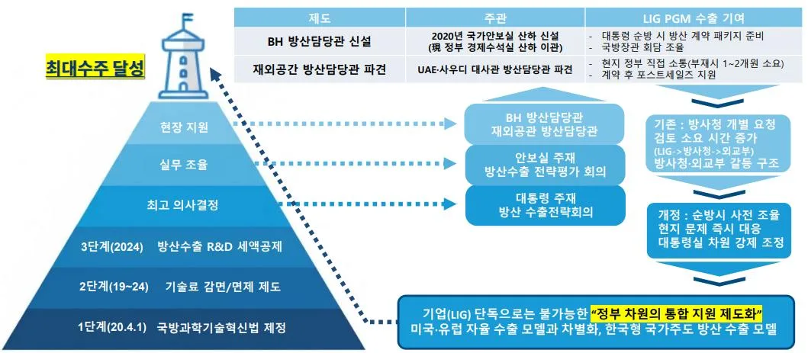
3.3. 혁신 결과
3.3.1. 재무적 성과
LIG 넥스원의 PGM 기술 혁신과 수출 성공은 기업의 재무 건전성 및 시장 가치에직접적인 영향을 미쳤다. 최근 2024 년 기준 LIG 의 재무 성과는 급증세를 보였다.
- 매출액 및 영업이익: 2023 년 매출액은 2 조 3,086 억 원이었으나, 2024 년 매출액은
3 조 2,770 억 원을 기록하며 전년 대비 42% 급증했다. 2024 년 영업이익은
2,308 억 원으로 전년 대비 23.8% 증가하는 등 폭발적인 성장세를 기록했다.
- 수주잔고: LIG 넥스원은 2024 년 기준 20 조 1,419 억 원에 달하는 사상 최대 규모의
수주잔고를 기록했으며, 이는 연간 매출액의 약 6 배에 해당하여 장기적인 안정적
성장 기반을 확고히 했다.
이러한 재무 성과는 PGM 의 중동 대량 수출과 명확하게 연계된 주가 변곡점 및 성장변곡점을 형성했다. LIG 넥스원의 주가 및 수주잔고 증가세가 폭발적으로 변모한시점은 2021 년 말에서 2022 년 초이다. 이 시기는 아랍에미리트(UAE)와의 약 4 조 원규모 천궁-II 수출 계약이 체결된 시점과 정확히 일치한다. 이 계약은 LIG 의 첨단 PGM 기술력을 국제적으로 입증하는 결정적인 계기이자, 이후 사우디아라비아, 이라크
등과의 연이은 대규모 PGM 수출 계약으로 이어지는 서막이었다. 따라서 PGM 의 중동대량 수출이 재무 성과 및 기업 가치 상승의 직접적인 인과 요인이었음을 명확히강조한다. 해당 내용을 요약하면 아래의 표 및 그림과 같다.
<그림 17. LIG Nex1 주요 재무 성과 및 시장 변곡점 >
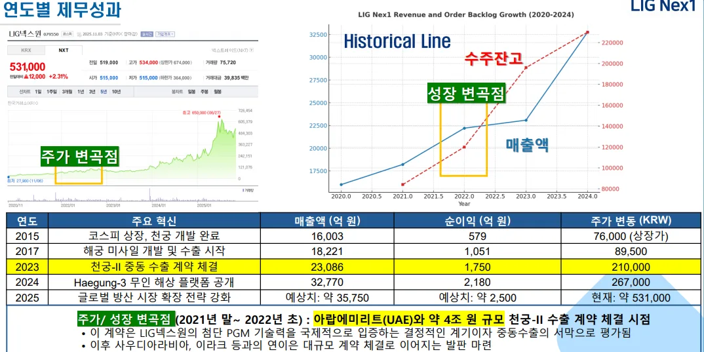
3.3.2. 방위산업 내 성과
LIG 넥스원의 PGM 혁신 성공은 단순한 기업 실적 개선을 넘어, 국가 안보 환경의근본적인 변화와 아래와 같은 한국 방위산업의 글로벌 위상 격상을 초래했다.
1) 국가 안보 강화 및 자주 국방 실현: 천궁-II, L-SAM, 현궁 등 국산 PGM 체계의 성
공적인 개발 및 전력화는 대한민국이 북한의 미사일 위협에 독자적으로 대응할
수 있는 다층 방어체계 구축의 핵심 기반을 제공했다. 이를 통해 자주 국방 능력
이 획기적으로 확보되었으며, 국가 안보를 강화하는 데 기여했다.
2) 경제적 성장 및 시장 확대: 혁신의 결과, LIG는 매출액 및 영업이익 급증, 해외 수
출 급증, 수주잔고 안정(연매출의 6배 규모)이라는 재무적 성과를 달성했다. 특히,
중동 3개국에 대한 대규모 PGM 수출 성공은 한국 방산의 기술력을 국제적으로
공인받는 계기가 되었고, 중동 지역에 K-방산 벨트를 구축하여 향후 추가적인 글
로벌 시장 확대를 위한 교두보를 마련했다.
3) 기술 리더십 및 K-방산 신드롬 구축: LIG 넥스원은 CMMI Level 5 달성, 독자적인
PGM 핵심 기술(탐색기, 유도조종) 내재화, 그리고 85%의 높은 국산화율을 통해
기술 리더십을 구축했다. 이러한 기술적 성공은 후발주자였던 한국 방위산업이
글로벌 시장의 핵심 주체(Leader)로 질적 위상을 변화시키는 'K-방산 신드롬'의
핵심 동력이 되었다. LIG의 PGM 성공 사례는 한국의 독특한 Statist Triple Helix
모델이 첨단 방위산업 분야에서 어떻게 글로벌 경쟁력을 창출할 수 있었는지를
보여주는 모범적인 모델로 평가되며, 한국 방위산업의 미래 혁신을 선도하는 위
치에 확고히 자리매김하게 되었다.
<그림 18. LIG Nex1 PGM 혁신 결과 >
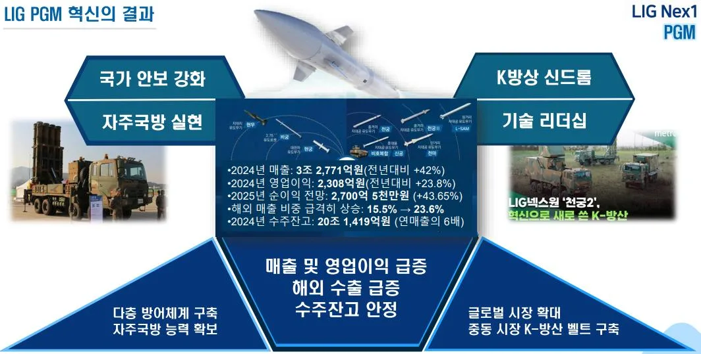
제 4 장 분석 결과
4.1. 연구 설문
4.1.1. 설문 개요
본 연구는 LIG 넥스원 정밀유도무기(PGM) 수출 성공 요인에 대한 핵심 인사이트를확보하기 위해 심층 전문가 집단 인터뷰(Focused Group Interview, FGI)를 진행하였다. FGI 에는 LIG 넥스원 임직원, 경쟁사 연구원(KAI, 한화), 국방과학연구소(ADD) 및국방기술진흥연구소(KRIT) 연구원, 방위사업청(DAPA) 및 한국국방연구원(KIDA) 분석가, 학계 전문가, 그리고 공군 천궁-II 운용 경험자 등 총 14 명의 기업/지원조직/제도 관련전문가가 참여했다.
설문은 기업 역량(R&D, 사업), 지원조직 역량, 제도적 환경의 네 가지 영역에 걸친 9 개의 잠재 변수와 관련된 심층 질문으로 구성되었으며, 전문가들의 의견, 인식, 태도등을 심층적으로 조사하는 데 중점을 두었다.
<표 4. FGI 설문 참여 인원 세부사항 >
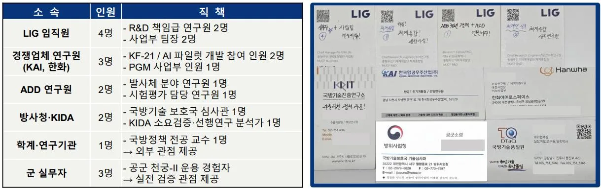
4.1.2. 설문 결과
설문 결과는 LIG PGM 수출 성공이 단순히 기업의 노력뿐만 아니라, 국가 혁신 시스템내 행위자 간의 상호작용에 크게 의존한다는 점을 시사한다.
- R&D 역량 시사점: 전문가들은 첨단 기술 내재화 능력과 종합 시험시설 기반
시스템 통합 능력을 높이 평가하면서도, 기술 소유권이 ADD(지원조직)에
독점되어 있다는 점에 높은 가중치를 부여했다. 이는 기업이 R&D 결과물의
소유권보다는 ADD 의 기술 이전 과정을 통한 체계 통합 역량 확보에 집중하는
한국 방산의 독특한 경로 의존적 특성을 보여준다.
- 사업 역량 및 지원 조직 시사점: 전략적 파트너십 및 납기 대응력이 수출 성공의
핵심으로 평가되었다. 특히 통합 사업화 지원 체계 측면에서 방위사업청의 갈등
조정 역할에 높은 가중치가 부여되었다. 이는 대규모 수출 계약 이행 시 발생하는
국내 공급망 내의 기업 간 갈등(예: 한화-LIG 갈등)을 국가 차원에서 중재하는
역할이 계약 성사에 결정적이었음을 시사한다.
- 제도적 환경 시사점: 수출 인센티브 제도화에 대한 LIG 내부 응답자들의 가중치
편차가 크게 나타났다. 이는 제도의 중요성을 인식하지만, 정권 변화에 따라
변하지 않는 장기적이고 예측 가능한 제도적 지원 체계가 필요하다는
전문가들의 의견을 반영한다. 또한 수출 납기 대응력 확보는 기업 단위를 넘어
국가 단위의 선제적 생산 지원 역량이 필수적이라는 시사점이 도출되었다.
<그림 19. FGI 설문 결과 도식화 및 시사점 >
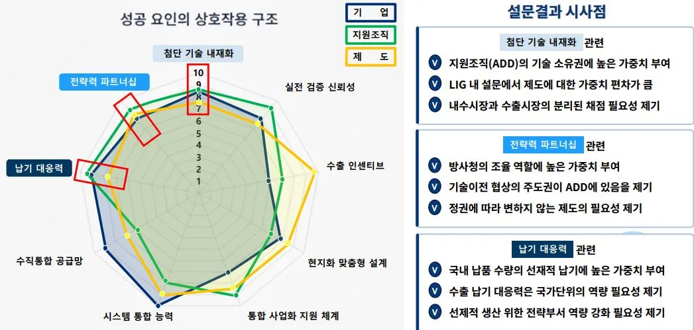
4.2. 이론적 함의
4.2.1. NIS 이론 및 사례 적용
국가 혁신 체제(National Innovation System, NIS) 이론은 신기술 창출, 이전, 확산에기여하는 공공 및 민간 제도와 행위자의 네트워크를 핵심으로 정의한다.
Freeman(1987)이 개념을 체계화하고, Lundvall(1992)은 사용자-생산자 간의 상호학습과 암묵지(Tacit Knowledge)의 중요성을 강조했으며, Nelson(1993)은 각 국가의 NIS 가 갖는 역사적, 제도적 특수성과 경로 의존성을 규명했다.
LIG PGM 성공 사례는 한국의 정부 주도형 NIS 가 어떻게 후발주자의 도약을지원했는지 보여준다.
- 국가 주도형 기반: ADD 창설(1970)과 유도무기 분야 전문화·계열화 제도(1983)
등 정부 주도의 제도적 기반은 LIG 가 PGM 분야에 자원을 집중하고 기술 추격의
경로를 확보하는 데 핵심적인 역할을 했다.
- 사용자-생산자 상호작용: 군(사용자)의 명확한 작전요구성능(ROC)과
LIG(생산자)의 R&D 는 상호 학습을 통해 진행된다. 천궁-II 의 67 개 항목 검증과
같은 엄격한 시험 평가는 실전적 적합성을 보장하며, 이는 해외 수출 시 '검증된
신뢰성'이라는 강력한 세일즈 포인트를 제공했다.
- 역량 구축 및 학습 경제: LIG 의 높은 R&D 인력 집중도(약 58% )와
국제공인시험기관(KOLAS) 인증은 기술 내재화와 지속적인 조직 학습이 수출
성공의 선순환 구조를 형성했음을 보여준다.
4.2.2. Triple Helix 이론 사례 적용
Triple Helix 이론은 대학, 산업, 정부라는 세 가지 주체가 상호작용하고 역할이중첩되면서 지식 기반 경제 발전을 이끌어낸다는 모델이다. Etzkowitz 와 Leydesdorff(1995)가 제시한 이 모델은 지식 생산 체계의 역동성(Innovation Dynamics)을 설명한다.
LIG PGM 사례는 'Statist Triple Helix'(정부 주도형 Triple Helix)라는 독특한 구조로나타난다.
- 모델의 변형: 표준 Triple Helix 에서 지식 생산을 담당하는 '대학'의 역할이 한국
방산에서는 ADD(정부 연구소)와 군(ROC)의 ROC 검증 및 피드백 기능으로
대체된다.
- 지식 공간의 독점: ADD 가 원천기술 개발 및 기술 소유권을 독점하고,
기업(LIG)은 기술 이전(실시권)을 받아 대량 생산 및 체계 통합에 집중하는
구조는 후발주자의 초기 R&D 위험을 최소화하는 제도적 보완성을 제공했다.
- 혁신 체계 자체의 혁신: LIG 의 성공을 촉진한 국방과학기술혁신법
제정(2020)이나 기술료 감면/면제 제도(2019~)는 혁신 체계 자체를 개선하려는
'Innovation in Innovation'의 이론적 근거를 제공하며, 지속 가능한 혁신 환경을
구축했다.
4.2.3. 한국 방위산업의 특성
한국 방위산업의 혁신 구조는 NIS 와 Triple Helix 이론을 통합적으로 적용할 때 '국가생존 중심 혁신 체계'를 갖는 Statist Triple Helix 의 극단적인 형태로 특징지어진다.
- 경로 의존성(Path Dependency): 한국 방산의 고유한 발전 경로는 1970 년대
ADD 창설, 율곡 사업 추진 등 국가 안보와 생존이라는 절박한 동기에서
출발했다. 이는 Nelson 이 분석한 다른 국가들의 NIS 와 달리, 방위산업에 대해
발전국가(Developmental State) 전략을 채택하게 했으며, 정부가 R&D 와 재원을
전담하고 기업은 보장된 기술 이전과 수익을 획득하는 구조를 형성했다.
- 삼자 협력 체계의 역할 분화:
o 지식 공간(ADD): 원천기술 개발 소유권을 독점하며 기업의 R&D 초기 위험을
흡수한다.
o 혁신 공간(기업): ADD 기술을 기반으로 대량 생산, 체계 통합 및 수출에
특화한다.
o 합의 공간(방사청/군): 소요군(군)의 ROC 를 통해 개발 방향을 제시하고,
방위사업청이 단일 창구를 통해 정책을 주도하고 수출을 촉진하는 제 4 의 조정
행위자 역할을 수행한다.
- 제도적 보완성: 이러한 분화된 역할은 제도적 보완성을 형성한다. ADD 가 R&D
비용을 부담하고 군의 ROC 가 개발 방향을 제시함으로써 불확실성을
감소시키고 개발 속도를 높인다. 또한 기술료 면제 등의 제도는 기업에게 '제도적
가격 우위'를 제공하여 글로벌 시장에서 경쟁사 대비 낮은 비용으로 고성능
제품을 공급하는 기반이 된다.
<그림 20. 기존 Triple Helix와 한국 방위산업 Triple Helix 비교 도식 >
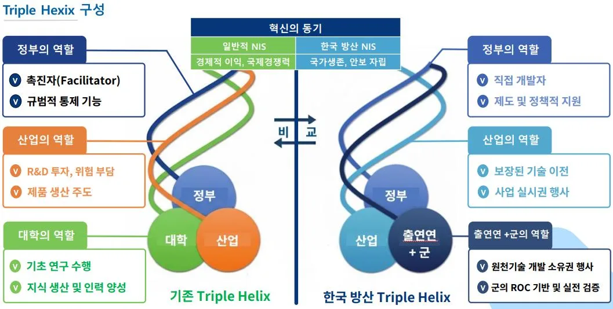
4.3. 시사점
4.3.1. 미래전 양상
미래 전쟁의 양상은 첨단 기술을 기반으로 근본적인 패러다임 전환을 맞이하고 있다.
- 전영역 다영역 모자이크전(ADMW, All-Domain/Multi-Domain Warfare): 전장
공간이 육해공뿐만 아니라 우주, 사이버 공간으로 확장되고 있으며, 센서-결정-
화력이 유기적으로 통합되는 모자이크전 형태로 진화하고 있다.
- 소프트웨어 중심 무기체계(SDWS, Software-Defined Weapon System): 전통적인
하드웨어 중심의 무기체계에서 벗어나, AI, 네트워크, 데이터 처리에 의해 핵심
성능과 운용 방식이 유연하게 정의되는 소프트웨어 중심의 전쟁으로 패러다임이
전환되고 있다.
- AI/무인 체계의 보편화: 러시아-우크라이나 전쟁에서 이미 AI 자폭 드론, 군집
드론, AI 기반 표적 식별 기술 등이 실전에 투입되면서, 인공지능이 국가 안보의
필수 전략 자산으로 부상했다. 이는 OODA Loop 가속화 경쟁을 초래하여, 정보
우위와 신속한 결심 능력이 전장의 승패를 좌우하게 된다.
4.3.2. 한국 방위산업 한계점
LIG PGM 성공을 이끈 한국 방산의 Statist Triple Helix 구조는 추격형 혁신에는효과적이었 으나, SDWS 와 ADMW 가 요구하는 신속하고 개방적인 미래 혁신에는아래와 같은 구조적 한계를 노출하고 있다.
- 지식 공간의 폐쇄성과 기초 연구 역량 부족: 지식 생산이 ADD 중심으로
독점되어 있어, 미래전에 필수적인 AI, 자율 시스템, 네트워크 중심전 등 첨단
분야의 기초 연구 역량이 부족하다.
- 혁신 속도 지체 및 스타트업 참여 제한: 기업이 대량 생산과 정부 기술의
상용화에 집중하고 있어, 미래전이 요구하는 신속한 시제품 개발(Rapid
Prototyping) 능력이 부족하며, 혁신 공간이 폐쇄적이어서 민간 스타트업 기술
흡수 역량이 제한된다.
- 경직된 조정 메커니즘: 방위사업청 중심의 조정 메커니즘이 위계적이어서
다양한 행위자(민간 스타트업, 대학) 간의 수평적 협력과 상향식(Bottom-up)
혁신을 촉진하는 데 한계가 있다.
- 일방향 기술 순환 및 대학 역할 주변화: 기술 이전이 ADD 에서 기업으로의
일방향 으로만 이루어져 민군 겸용 기술(Dual-Use)의 순환이 단절되고 있다.
또한 대학의 역할이 인력 공급 위주로 주변화되어 첨단 기술 연구 주도에
미흡하다.
4.4. 발전 방향
4.4.1. SWOT & Pest 분석
한국 방위산업의 미래 혁신 모멘텀을 지속하기 위해 SWOT 및 PEST 분석이 종합적으로수행 되었다. 이 분석은 ADD 중심의 ROC 기반 무기 개발 체계(강점)와 기술료 면제등의 강력한 수출 지원 제도(정치/경제 기회)를 활용하는 동시에, 대학 역할 축소 및혁신 생태계 경직성 (약점)을 미래전 패러다임 전환(기술 위협)이라는 위협에 대비하여보완하는 전략적 방향을 제시한다.
- SWOT 분석: 강점으로는 ROC 기반의 실전적 무기 개발과 가격 경쟁력이
꼽혔으며, 약점으로는 대학의 축소된 역할 및 일방향 기술 이전이 도출되었다.
기회 요소로는 NATO 방산 공급망 다변화 및 국가 주도 지원 확대가, 위협
요소로는 소프트웨어 전쟁으로의 패러다임 전환과 핵심 부품 공급망 리스크가
식별되었다.
상세한 SWOT 및 PEST 분석 결과는 아래 그림과 같다.
<그림 21. 한국 방위산업 SWOT&PEST 분석 >
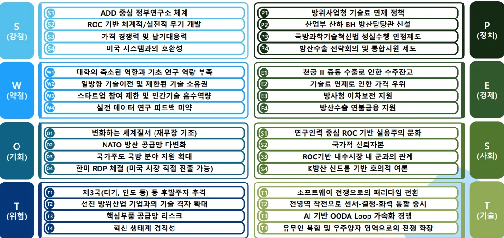
4.4.2. SO/ST/WO/WT 분석
위의 SWOT 분석 결과를 바탕으로 한국 방위산업의 4 가지 전략적 방향(SO, ST, WO, WT)이 도출되었다.
- SO (강점-기회) 전략 (신뢰 자본 극대화): 실전적 신뢰성(S)과 제도적 지원(O)을
활용하여 PGM 중심의 ISR/C4I 패키지 플랫폼화를 통해 글로벌 공급망에
포지셔닝한다.
- ST (강점-위협) 전략 (체계 통합 노하우 활용): LIG 의 체계 통합 노하우(S)를
SDWS 전환 위협(T) 대응에 활용하여, AI 기반 Cross-Service Data Mesh 구축에
적용함으로써 혁신 리스크를 관리한다.
- WO (약점-기회) 전략 (대학 역할 재도입): 국가 주도 지원(O)을 활용하여 대학
역할 축소(W)라는 약점을 보완하고, 국방 AI 연구 센터 설립 등을 통해 민군 겸용
혁신 생태계를 개방한다.
- WT (약점-위협) 전략 (이원적 데이터 통합): 혁신 경직성(W)을 최소화하여
공급망 리스크(T)에 대응하며, 이원적 데이터 통합 플랫폼을 구축하고 핵심 부품
공급망 자립도를 향상시켜 탄력성을 확보한다.
상세한 SO/ST/WO/WT 전략은 아래 그림과 같다.
<그림 22. 한국 방위산업 SO/ST/WO/WT 분석 >
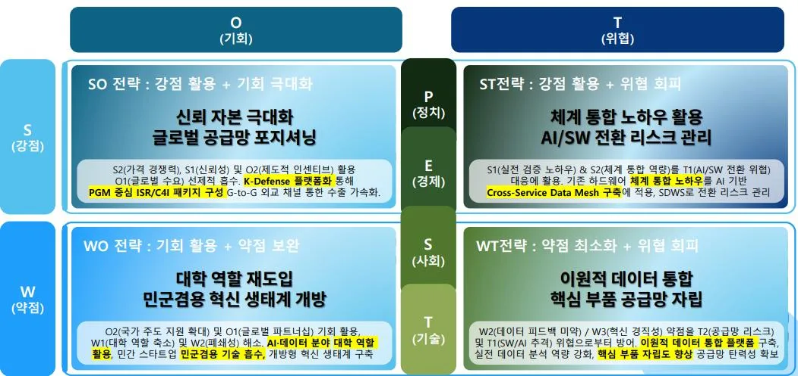
4.4.3. 한국 방위산업 로드맵
앞선 전략들을 구현하기 위한 AI 기반 K-DTH (Defense Triple Helix) 2.0 으로의 진화로드맵이 단기(2025~2028 년), 중기(2029~2033 년), 장기(2034 년 이후)의 3 단계로제시된다.
- 단기 (2025~2028 년): SDWS 기반 구축: AI 기반 전장 데이터 통합 연구 착수 및
Common Data Framework (CDF) 프로토타입 개발에 집중한다. 기술료 및 금융
지원 체계를 장기적/예측 가능한 형태로 제도화하는 것이 목표이다.
- 중기 (2029~2033 년): 혁신 생태계 재구성: 국방 AI 연구 센터 설립을 통한 대학
역할 재도입과 SW/AI 표준 아키텍처 구축에 주력한다. ST 전략을 기반으로 핵심
SW/H/W 부품 자립화에 집중 투자한다.
- 장기 (2034 년 이후): 글로벌 ADMW 표준 선도: AI 기반 결심 우위를 확보하고
ADMW 솔루션의 상용화를 통해 글로벌 모자이크전 표준 정립에 기여한다. 성실
수행 인정 제도의 AI 분야 전면 확대 적용 등 제도적 공진화를 완성하는 것을
최종 목표로 한다.
로드맵의 상세한 단계별 목표와 실행 과제는 별도의 로드맵은 아래의 그림과 같다.
<그림 23. 한국 방위산업 발전방향 로드맵 >
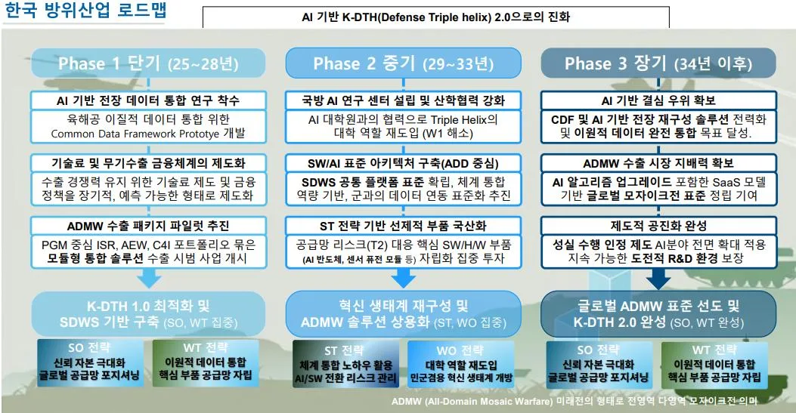
4.5. 최종 결론
LIG 넥스원의 정밀유도무기(PGM) 수출 성공은 단순한 기업의 성과를 넘어, 대한민국의방위산업이 후발주자(Latecomer)에서 글로벌 핵심 주체로 질적 전환을 이루었음을입증하는 변곡점이다. 이러한 성공은 기업의 뛰어난 R&D 역량과 사업 역량(납기 준수, 현지화)을 기반으로 하지만, 그 근본적인 동력은 Statist Triple Helix(국가 주도형 혁신체계) 구조에 있었다. 이 독특한 구조는 국방과학연구소(ADD)와 군이 지식 생산과 실전검증의 역할을 주도하고, 정부(방위사업청, 청와대)가 범정부 통합 거버넌스를 통해대규모 수출 협상을 조율하며 , 기술료 면제 제도를 통해 유럽 경쟁사 대비 20% 이상의
'제도적 가격 우위'를 제공했다. 즉, LIG 의 성공은 국가 안보라는 사명을 기반으로 혁신리스크를 국가가 흡수하고 민간이 대량 생산 및 수출에 집중하도록 설계된 경로 의존적전략의 성공적 예시이다.
그러나 미래 전장이 소프트웨어 중심 무기체계(SDWS)와 전 영역 다영역 모자이크전 (ADMW)으로 패러다임이 전환됨에 따라, 현재의 Statist Triple Helix 구조는 한계를드러내고 있다. ADD 중심의 지식 독점은 AI 와 같은 첨단 분야의 기초 연구 역량을저해하고 방위사업청 중심의 경직된 조정 메커니즘은 민첩성이 요구되는 혁신 속도를지체시키는 구조적 병목 현상으로 작용한다.
따라서 한국 방위산업이 이 혁신 모멘텀을 지속하고 미래전에서 결심 우위를 확보하기위해 서는, 기존의 강점(실전 검증 신뢰성, 제도적 가격 우위)을 유지하면서 혁신 체제자체를 진화 시켜야 한다. 이는 대학의 역할을 지식 공간에 재도입하고, SW/AI 표준아키텍처를 통한 혁신 생태계의 개방성을 확보하며, 수출 금융 및 기술료 제도를장기적인 제도로 공고히 하는 구조적 혁신을 요구한다. 궁극적으로 한국은 LIG Nex1 의 PGM 수출 성공을 발판 삼아 글로벌 ADMW 표준을 선도하는 위치로 나아가야 할것이다.
Reference
[1] SIPRI. (2025). Trends in World Military Expenditure, 2024. SIPRI Fact Sheet. [2] Data Insights Market. (2025). Air-Launched Precision-Guided Munitions Market Report. [3] Jeong, D. (2025. 05.). LIG Nex1 (079550 KS) 1Q25 OP beats consensus by 75%. Mirae Asset Securities.
[4] Northwest Aerospace News. (2025). South Korea's Expanding Aerospace Industry. [5] LIG Nex1. (n.d.). News List.
[6] LIG Nex1. (n.d.). Maritime Warfare.
[7] Cha, E. (2025. 05.). LIG Nex1 Unveils Three New USVs at MADEX 2025. Naval News. [8] Jung, S. (2025. 05.). LIG Nex1 Partners with U.S. Shield AI, Raytheon at MADEX 2025. Businesskorea.
[9] Asian Military Review. (2025. 01.). South Korea Launches L-SAM II Development Foc. [10] Battle-Updates. (2025. 02.). Missile, Artillery, Hypersonics, Ballistics and Soldier Systems Update 64.
[11] LIG Nex1. (n.d.). Precision Guided Munitions.
[12] Herh, M. (2025. 04.). LIG Nex1 Partners with Anduril of the U.S. to Advance Next-gen Weapons Systems. Businesskorea.
[13] Defense-Studies. (2024. 12.). LIG Nex1 Begins Flight Test of AESA Radar for FA-50. [14] LIG Nex1. (2024). LIG Nex1 Sustainability Report 2023. [15] Wikipedia. (n.d.). Defense industry of South Korea.
[16] Office of Technology Assessment. (1991). Global Arms Trade: Commerce in Advanced Military Technology and Weapons. Princeton University.
[17] Alphaspread. (n.d.). LIG Nex1 Co Ltd Research & Development. [18] Mirae Asset Securities. (2023. 12.). LIG Nex1 to acquire US robotics company GRC. [19] KED Global. (2025. 05.). Advancing Missile Defense: Hanwha Systems' Multi-Function Radar Development for South Korea's L-SAM II and its Global Strategic Implications. [20] ChosunBiz. (2025. 01.). Korean Missile Defense System (KAMD) Concept Diagram. [21] Jung, S. (2025. 01.). LIG Nex1 and Hanwha in Dispute over Cheongung-II Missile System Pricing. Businesskorea.
[22] KED Global. (2024. 07.). LIG Nex1's guided rocket passes US performance test. [23] Defensetalks. (2025. 04.). LIG Nex1 Showcases Advanced Missile and Surveillance Systems at IQDEX 2025.
[24] CompaniesMarketCap. (n.d.). LIG Nex1 Net Assets.
[25] Financial Supervisory Service. (n.d.). DART - LIG Nex1 Annual Report. [26] LIG Nex1. (n.d.). IR Materials.
[27] The Korea Herald. (2017. 11.). Defense firm LIG Nex1 completes new R&D center. [28] Naval Technology. (n.d.). LIG Nex1 - Naval Weaponry Contractor. [29] Herh, M. (2025. 03.). LIG Nex1 Secures Major Contracts in Middle East, Eyes U.S. and Malaysia. Businesskorea.
[30] Manda Equilibrium. (n.d.). Defense Deals Take Flight.
[31] LIG Nex1. (n.d.). History.
[32] Herh, M. (2025. 02.). LIG Nex1 Achieves Robust Q4 Performance Despite Export Challenges. Businesskorea.
[33] Bernama. (2025. 03.). LIG Nex1 Opens New Office in Malaysia to Boost Defence Cooperation.
[34] Herh, M. (2025. 02.). LIG Nex1 Targets Middle East Market with Innovative Defense Solutions at IDEX 2025. Businesskorea.
[35] LIG Nex1. (n.d.). Talent Acquisition.
[36] Jung, S. (2025. 04.). Cheollian Satellite 5 Development: LIG Nex1's Selection Under. Businesskorea.
[37] Invest KOREA. (2024. 06.). KOTRA launches trade strategy reform unit to achieve US$1 tln in exports.
[38] ChosunBiz. (2025. 06.). KOTRA launches task force to boost South Korea's $1 trillion export pledge.
[39] Wikipedia. (n.d.). LIG Nex1.
[40] Park, J. (2023). Forward-Looking Sonar-Based Stream Function Algorithm for Obstacle Avoidance in Autonomous Underwater Vehicles. Journal of Marine Science and Engineering, 11(10), 1998.
[41] Kim, W., Lee, T.-H., Baik, G., An, S., Jung, J.-H., & Kim, Y. (2022). Compact Indirect Slot- Fed Wideband Patch Array Antenna for Missile Seeker Application. Applied Sciences, 12(19), 9569.
[42] Kim, Y. H. (n.d.). Scientific Contributions of Yoon-Hwan Kim. ResearchGate. [43] Naval News. (n.d.). LIG Nex1 Tag Feed.
[44] Korea Science. (n.d.). A Study on the Prediction of Missile Remaining Life Based on Failure Data.
[45] Investing.com. (2025. 01.). LIG Nex1 Stock Poised for Gains as JPMorgan Highlights Global Defense Edge.
[46] Chuck Hills's C&G Blog. (2025. 02.). Precision Guided 70mm Rockets–APKWS and LOGIR, Poniard Low-Cost Guided Imaging Rocket.
[47] Wikipedia. (n.d.). Low-Cost Guided Imaging Rocket.
[48] Kim, J. (2025. 04.). LIG Nex1 and Hanwha Enhance Negotiations Over Cheon-gung II Export to Iraq. ChosunBiz.
[49] Mirae Asset Securities. (2025. 01.). LIG Nex1 (079550 KS) Maintain Buy and TP of W321,000.
[50] LIG Nex1. (n.d.). Main Page.
[51] Euro-SD. (2020). European Security & Defence 3/2020.
[52] PHDefense Resource. (2024. 01.). Man-Portable Air Defense System (2024). [53] LIG Nex1. (2024. 05.). LIG Nex1 Showcases Unmanned Systems and Guided Munitions at YIDEX 2024. Naval News.
[54] Electroninks. (n.d.). LIG Nex1 and Electroninks Sign MOU for Next-Generation Component Material R&D.
[55] Lee, J. (2025. 05.). South Korea's defense R&D demands private sector collaboration. ChosunBiz.
[56] Ng, J. (2025. 01.). South Korea Launches New Army MANET Development Foc. Asian Military Review.
[57] Herh, M. (2024. 09.). LIG Nex1 Signs Contract to Export Medium-Range Guided Weapon System to Iraq. Businesskorea.
[58] Kim, J. (2024. 09.). LIG Nex1 eyes $3.7 billion investment, exports to 30 countries by 2030. Korea JoongAng Daily.
[59] Army Recognition. (2024. 10.). LIG Nex1 Poniard guided rocket poised to revolutionize coastal defense at KADEX 2024.
[60] Herh, M. (2024. 10.). LIG Nex1 Showcases Cutting-edge Military Innovations at KADEX. Businesskorea.
[61] Kim, J. (2025. 03.). Hanwha and LIG Nex1 struggle for control in Iraq missile export negotiations. ChosunBiz.
[62] LIG Nex1. (n.d.). Introduction.
[63] Scribd. (2020). 2020 KODAS Directory.
[64] Kim, J. (2025. 01.). South Korea's defense industry earns $9.5 bn in exports, with profits surge. ChosunBiz.
[65] Jung, S. (2025. 01.). Korea's Defense Exports Total $9.5 Bil. in 2024, Half of Targeted Goal. Businesskorea.